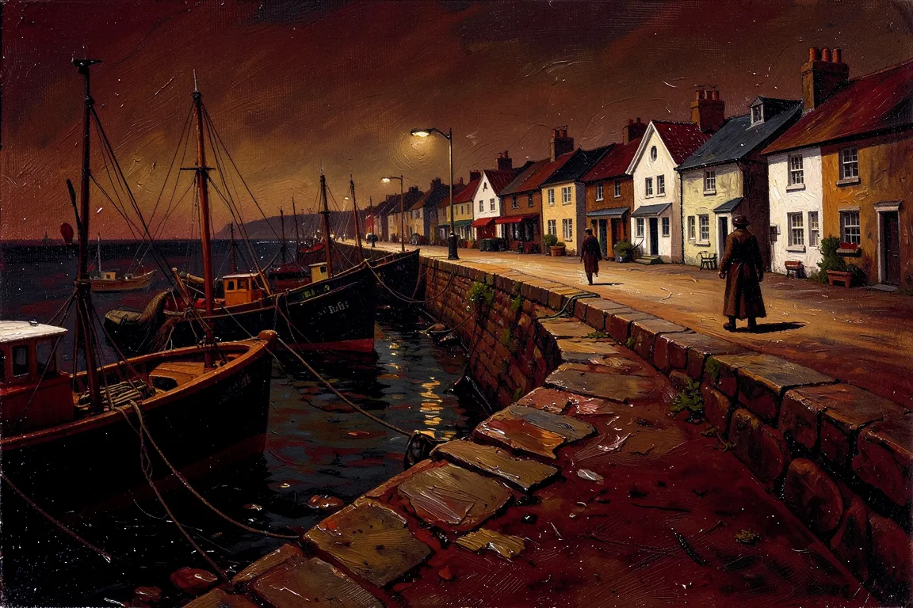

painting · 1600–1720 · also: Caravaggism, Dutch Golden Age painting, Tenebrism
Painting of the instant: strong chiaroscuro, diagonal movement, warm earth colour and a viewer who is pulled into the scene. It serves the church, the court and the new Dutch market for portraits and domestic life.

Core thesis
A picture is a staged moment in which light decides what matters and the viewer feels the event.
Design principles
Light one area of the picture at 3 to 5 times the brightness of the rest, and let the dark ground take 50–60% of the area.
Run the composition on a diagonal, with the main axis at 30–45° from the horizontal.
Place the figures off-centre, with the focal point on a third line and a gesture or a gaze that points through the picture.
Paint flesh and fabric with loaded, visible strokes in the light and thin, transparent paint in the dark.
Crop the scene close: figures fill 70–90% of the height and the nearest figure overlaps the picture edge.
Keep the palette warm and earthy, with one saturated red or blue as a single accent.
Show the texture of each material: satin, fur, bronze, skin and bread each get a different stroke.
Anti-patterns
Even, shadowless light across the whole picture
Symmetric, static compositions with figures in a row